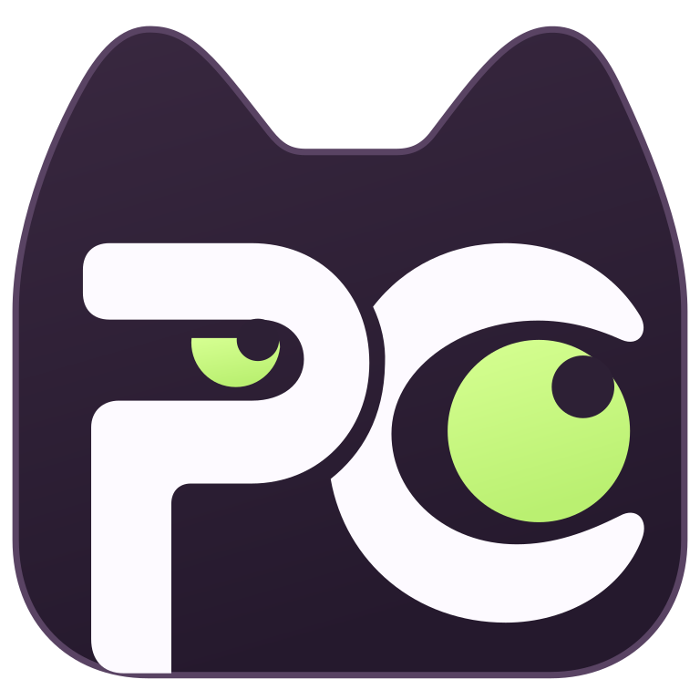
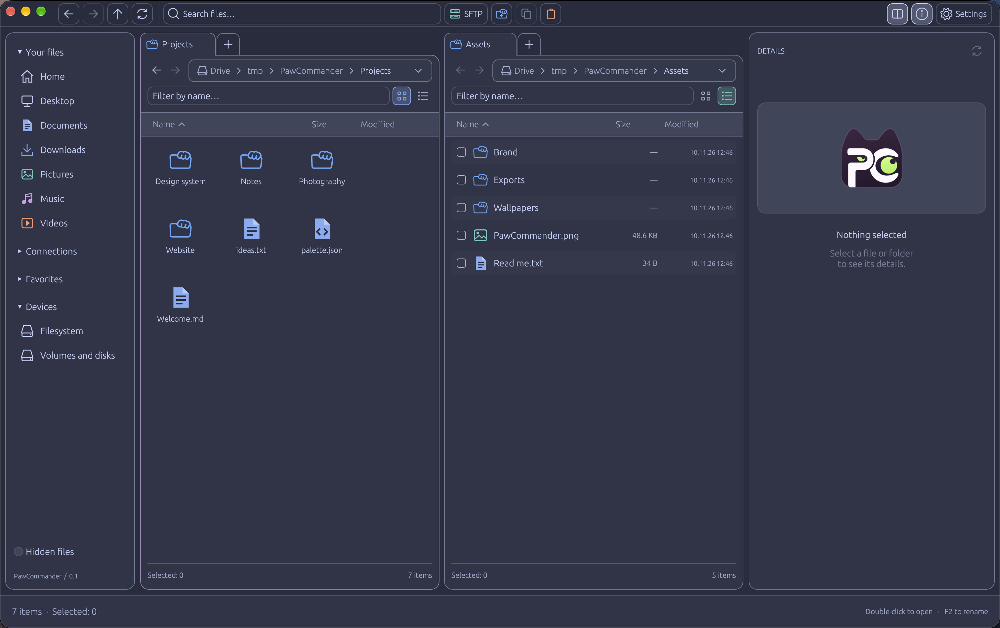

Two panes. One happy brain.
Keep source and destination side by side. Tabs, breadcrumbs, and list or grid views help you stay in your flow.

PawCommander. Get the appA fast, friendly file manager with two panes, SFTP,
and just the right amount of cat energy.
Free & open source · Apple Silicon · Early preview

A good little work companion
Your projects here. Your server there.
Everything you need, comfortably within reach.
Keep source and destination side by side. Tabs, breadcrumbs, and list or grid views help you stay in your flow.
Browse and transfer files over SFTP in either pane. Host-key verification and OS credential storage keep connections explicit.
Jump to a path, open a tab, filter files, or send them to Zed. Familiar shortcuts keep little tasks feeling little.
Growing, one paw at a time
PawCommander is young and actively evolving. Here’s where we want to take it—with your help.
Help choose what comes nextOur development roadmap, summarized from Linear.
Plans, not promises. Priorities may change; no release dates are committed.
Making everyday file operations more resilient, transparent, and comfortable.
Some pieces are in progress or review. The full milestone is not yet released.
Less hunting, more finding. A workspace that remembers how you like to work.
Bring more file types into the same calm workspace.
More capable connections and a closer link to your development tools.
Know what will change before you ask PawCommander to change it.
Let real needs guide what grows beyond the core experience.
Built in the open, better together
Found a rough edge? Missing your favorite shortcut? Have a tiny idea or a big one? Tell us. Bug reports, feature requests, code, docs, and translations all help this little project grow.
Ready to make yourself at home?
Free to download. Free to explore. Yours to make better.
macOS 11+ · M-series Macs · 6.5 MB ZIP
Unzip, drag into Applications, and open.
This preview is not Apple-notarized. macOS may ask for an extra first-launch step.
Tested on macOS 27.0.1. Older macOS versions are not manually verified. Intel, Windows, and Linux currently require a source build.
A little kindness goes a long way
If PawCommander makes your day a little easier, you can support its continued development. Donations are optional. The app stays free and open source.
SOL · Solana network
14JqyrBpqxpQaWBuRueLy1rzgs9cT8cZ7suguwQqBuErToncoin · TON network
UQAhFGlxuzSVrBnpgfOApDGAcGYzV7ljJUvFWSdufpyGKKByChoose the matching network and check the address in your wallet. No wallet connection needed.